|
|
 |
TELHAS METÁLICAS Um dos principais produtos comercializados pela Fergel, são as telhas para cobertura industrial e residencial em galvalume. Que é o nome comercial da chapa de aço revestida por uma camada de liga de alumínio e zinco que é aplicada por um processo de imersão a quente. A Fergel também produz telhas em chapa de aço galvanizado, zincado e alumínio. 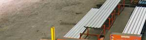 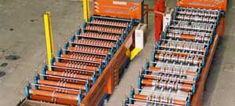 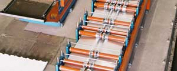 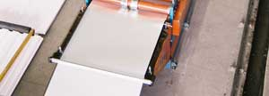 Perfiladora de telhas onduladas e trapezoidal. Principais vantagens • resistência à corrosão atmosférica superior; • aparência e estética; • elevada resistência ao calor; • resistência à oxidação em temperaturas elevadas. Aplicações Construção civil, agricultura, indústria automotiva, utilitários domésticos e outros. Característica Qualquer tipo de aço exposto ao meio ambiente oxida com o passar com tempo. A aplicação da liga de Al e Zn proporcionam ao aço, a resistência à corrosão oferecida pelo alumínio e a proteção galvânica do zinco. Telhas pré-pintadas
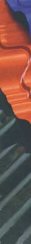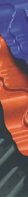 O aço pré-pintado da Fergel combina resistência e o apelo estético das cores vivas revestido pelo processo “coil-coating”, que é o resultado de um complexo tratamento químico e um acabamento final no revestimento. As telhas pré-pintadas podem ser produzidas nas cores azul, verde, branco, bege e cinza. POLICARBONATO A Fergel também comercializa o Policarbonato, que é uma substância polimérica que produz um plástico extremamente resistente, transparente e muito leve. O policarbonato caracteriza-se pela combinação esteticamente bela das estruturas em que são montados. Por causa da leveza, não exigem estruturas pesadas.
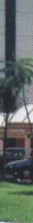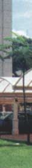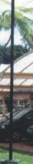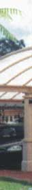 Foto ilustrativa O policarbonato garante proteção de até 10 anos contra os raios ultra-violetas e resistem a impactos de até 200 vezes que resiste uma chapa de vidro da mesma espessura.
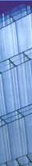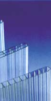 As chapas de policarbonato estão disponíveis em diferentes espessuras com diferentes níveis de resistência. O policarbonato está disponível nas cores branco-leitoso, fume, verde, azul, bronze refletivo e incolor. A Fergel desenvolve também projetos de estruturas metálicas especiais para a fixação do policarbonato. |
| Fergel Indústria e Comércio de Ferro e Aço da Amazônia Ltda. © 2006-2011 • Webdesign: Carlos Palácio |
 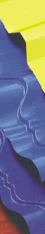
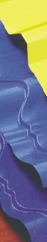 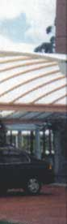
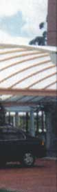